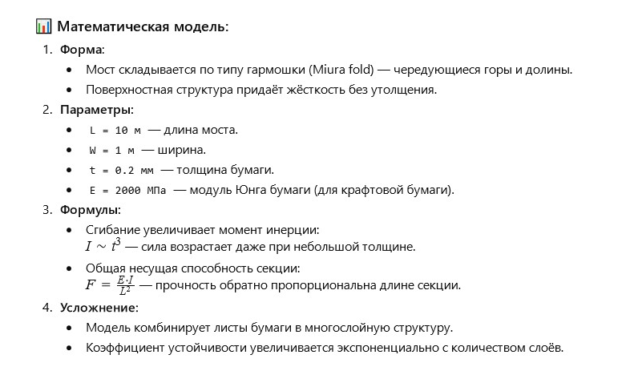

Автор: Валерий
Я наблюдал как человек используя искусство оригами построил из бумаги маленького динозавра.
Вечером, проходя через сквер, я остановился у лавочки, где пожилой человек складывал из бумаги маленького динозавра. Его движения были медленными, точными и почти торжественными — каждый сгиб был как строчка в стихотворении, каждый поворот бумаги — как дыхание древнего существа. Это был оригами-мастер. Он заметил мой интерес и, улыбнувшись, протянул мне другой листок бумаги: — Попробуйте сами. Это не просто игрушка — это искусство и… математика. Так началась моя встреча с геометрией бумажных миров.
Можешь предложить свой раскрой оригами для цветка «ТЮЛЬПАН» и стихотворение в стиле японской танка о юноше, у которого пока нет денег на живые цветы для любимой, но он нашёл способ выразить свою вечную любовь — ведь живые цветы увядают, а искусство оригами и его тюльпаны никогда?
Он не мог купить
ей живых цветов сейчас —
слишком дорог мир.
Но в каждом бумажном тюльпане
билось сердце навсегда.
Можно ли предложить простой раскрой для бумажного тюльпана в технике оригами, который сможет сделать даже ребенок?
Вот базовый раскрой и схема для оригами-цветка «ТЮЛЬПАН»:
📐 Раскрой:
-Возьмите квадрат бумаги (лучше тонкой, 15×15 см).
-Согните по диагоналям и в стороны (крест и X).
-Соберите базовую форму «двойной треугольник» (waterbomb base).
-Следуйте инструкции на схеме ниже :


Можно ли построить математическую модель прочности и последовательности сворачивания многослойной бумаги, чтобы она выдержала вес человека в виде пешеходного моста длиной 10 метров?
Да! Оригами-инженерия уже используется для создания мостов, панелей спутников и даже складных конструкций для медицины. Вот упрощённая модель прочности для такого «моста»: